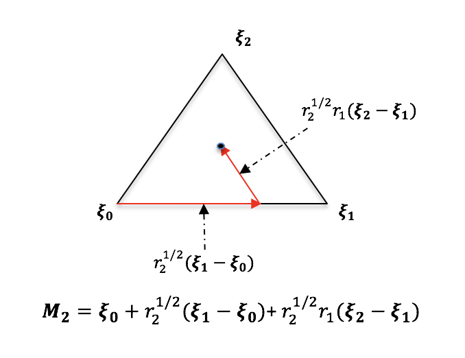
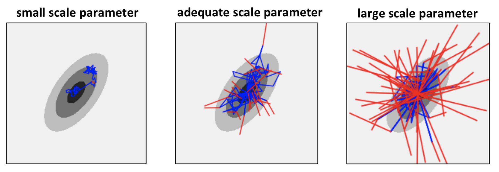

SampleMethods¶
This module contains functionality for all the sampling methods supported in UQpy.
MCS¶
The MCS class generates random samples from a specified probability distribution(s). The MCS class utilizes the Distributions class to define probability distributions. The advantage of using the MCS class for UQpy operations, as opposed to simply generating samples with the scipy.stats package, is that it allows building an object containing the samples and their distributions for integration with other UQpy modules.
MCS Class Descriptions¶
-
class
UQpy.SampleMethods.MCS(dist_name=None, dist_params=None, nsamples=None, var_names=None, verbose=False)[source]¶ Description:
Perform Monte Carlo sampling (MCS) of independent random variables from a user-specified probability distribution using inverse transform method.
- Input:
- param dist_name
A string or string list containing the names of the distributions of the random variables.
Distribution names must match those in the Distributions module. If the distribution does not match one from the Distributions module, the user must provide a custom distribution file with name dist_name.py. See documentation for the Distributions module. The length of the list must equal the dimension of the random vector. :type dist_name: string or string list
- param dist_params
Parameters of the distribution.
Parameters for each random variable are defined as ndarrays. Each item in the list, dist_params[i], specifies the parameters for the corresponding distribution, dist_name[i]. Relevant parameters for each distribution can be found in the documentation for the Distributions module. :type dist_params: ndarray or list
- param nsamples
Number of samples to generate.
No Default Value: nsamples must be prescribed. :type nsamples: int
- param var_names
names of variables
- type var_names
list of strings
- param verbose
A boolean declaring whether to write text to the terminal.
- type verbose
bool
- Output:
- return
MCS.samples: Set of generated samples
- rtype
MCS.samples: ndarray of dimension (nsamples, ndim)
LHS¶
The LHS class generates random samples from a specified probability distribution(s) using Latin hypercube sampling. LHS has the advantage that the samples generated are uniformly distributed over each marginal distribution. LHS is perfomed by dividing the range of each random variable into N bins with equal probability mass, where N is the required number of samples, generating one sample per bin, and then randomly pairing the samples.
Adding New Latin Hypercube Design Criteria¶
The LHS class offers a variety of methods for pairing the samples in a Latin hypercube design. These are specified by the criterion parameter (i.e. ‘random’, ‘centered’, ‘minmax’, ‘correlate’). However, adding a new method is straightforward. This is done by creating a new method that contains the algorithm for pairing the samples. This method takes as input the randomly generated samples in equal probability bins in each dimension and returns a set of samples that is paired according to the user’s desired criterion. The user may also pass criterion-specific parameters into the custom method. These parameters are input to the LHS class through the **kwargs. The output of this function should be a numpy array of at least two-dimensions with the first dimension being the number of samples and the second dimension being the number of variables . An example user-defined criterion is given below:
>>> def criterion(samples):
>>> lhs_samples = np.zeros_like(samples)
>>> for j in range(samples.shape[1]):
>>> order = np.random.permutation(samples.shape[0])
>>> lhs_samples[:, j] = samples[order, j]
>>> return lhs_samples
LHS Class Descriptions¶
-
class
UQpy.SampleMethods.LHS(dist_name=None, dist_params=None, lhs_criterion='random', lhs_metric='euclidean', lhs_iter=100, var_names=None, nsamples=None, verbose=False)[source]¶ Description:
A class that creates a Latin Hypercube Design for experiments. Samples on hypercube [0, 1]^n and on the parameter space are generated.
- Input:
- param dimension
A scalar value defining the dimension of the random variables. If dimension is not provided then dimension is equal to the length of the dist_name.
- type dimension
int
- param dist_name
A list containing the names of the distributions of the random variables. Distribution names must match those in the Distributions module. If the distribution does not match one from the Distributions module, the user must provide custom_dist.py. The length of the string must be 1 (if all distributions are the same) or equal to dimension.
- type dist_name
string list
- param dist_params
Parameters of the distribution. Parameters for each random variable are defined as ndarrays. Each item in the list, dist_params[i], specifies the parameters for the corresponding distribution, dist[i].
- type dist_params
list
- param: distribution: An object list containing the distributions of the random variables.
Each item in the list is an object of the Distribution class (see Distributions.py). The list has length equal to dimension.
- type distribution
list
- param lhs_criterion
The criterion for generating sample points Options:
‘random’ - completely random
‘centered’ - points only at the centre
‘maximin’ - maximising the minimum distance between points
‘correlate’ - minimizing the correlation between the points
Default: ‘random’
- type lhs_criterion
str
- param lhs_metric
The distance metric to use. Supported metrics are: ‘braycurtis’, ‘canberra’, ‘chebyshev’, ‘cityblock’, ‘correlation’, ‘cosine’, ‘dice’, ‘euclidean’, ‘hamming’, ‘jaccard’, ‘kulsinski’, ‘mahalanobis’, ‘matching’, ‘minkowski’, ‘rogerstanimoto’, ‘russellrao’, ‘seuclidean’, ‘sokalmichener’, ‘sokalsneath’, ‘sqeuclidean’, ‘yule’.
Default: ‘euclidean’.
- type lhs_metric
str
- param lhs_iter
The number of iteration to run. Required only for maximin, correlate and criterion. Default: 100
- type lhs_iter
int
- param nsamples
Number of samples to generate. No Default Value: nsamples must be prescribed.
- type nsamples
int
- Output:
- return
LHS.samples: Set of LHS samples
- rtype
LHS.samples: ndarray
- return
LHS.samplesU01: Set of uniform LHS samples on [0, 1]^dimension.
- rtype
LHS.samplesU01: ndarray.
Stratified Sampling¶
Stratified sampling is a variance reduction technique that divides the parameter space into a set of disjoint and space-filling strata. Samples are then drawn from these strata in order to improve the space-filling properties of the sample design. Stratified sampling allows for unequally weighted samples, such that a Monte Carlo estimator of the quantity \(E[Y]\) takes the following form:
where \(w_i\) are the sample weights and \(Y_i\) are the model evaluations. The individual sample weights are computed as:
where \(V_{i}\le 1\) is the volume of stratum \(i\) in the unit hypercube (i.e. the probability that a random sample will fall in stratum \(i\)) and \(N_{i}\) is the number of samples drawn from stratum \(i\).
UQpy supports several stratified sampling variations that vary from conventional stratified sampling designs to advanced gradient informed methods for adaptive stratified sampling. Stratified sampling capabilities are built in UQpy from three sets of classes. These class structures facilitate a highly flexible and varied range of stratified sampling designs that can be extended in a straightforward way. Specifically, the existing classes allow stratification of n-dimensional parameter spaces based on three common spatial discretizations: a rectilinear decomposition into hyper-rectangles (orthotopes), a Voronoi decomposition, and a Delaunay decomposition. The three parent classes are:
The
Strataclass defines the geometric structure of the stratification of the parameter space and it has three existing subclasses -RectangularStrata,VoronoiStrata, andDelaunayStratathat correspond to geometric decompositions of the parameter space based on rectilinear strata of orthotopes, strata composed of Voronoi cells, and strata composed of Delaunay simplexes respectively.The
STSclass defines a set of subclasses used to draw samples from strata defined by aStrataclass object.The
RSSclass defines a set of subclasses for refinement ofSTSstratified sampling designs.
New Stratified Sampling Methods¶
Extension of the stratified sampling capabilities in UQpy can be performed through subclassing from the three main classes. First, the user can define a new geometric decomposition of the parameter space by creating a new subclass of the Strata class. To draw samples from this new stratification, the user can define a new subclass of the STS class. Finally, to enable refinement of the strata based on any user-specified criteria the user can define a new subclass of the RSS class.
In summary:
To implement a new stratified sampling method based on a new stratification, the user must write two new classes:
A new subclass of the
Strataclass defining the new decomposition.A new subclass of the
STSclass to perform the sampling from the newly designStrataclass.
To implement a new refined stratified sampling method based on a new stratified, the user must write three new classes:
A new subclass of the
Strataclass defining the new decomposition.A new subclass of the
STSclass to perform the sampling from the newly designStrataclass.A new subclass of the
RSSclass to perform the stratum refinement and subsequent sampling.
The details of these subclasses and their requirements are outlined in the sections below discussing the respective classes.
Strata Class¶
The Strata class is the parent class that defines the geometric decomposition of the parameter space. All geometric decompositions in the Strata class are performed on the n-dimensional unit \([0, 1]^n\) hypercube. Specific stratifications are performed by subclassing the Strata class. There are currently three stratifications available in the Strata class, defined through the subclasses RectangularStrata, VoronoiStrata, and DelaunayStrata.
Strata Class Descriptions¶
-
class
UQpy.SampleMethods.Strata(n_strata=None, input_file=None, origins=None, widths=None)[source]¶ Description:
Define a rectilinear stratification of the n-dimensional unit hypercube [0, 1]^dimension with N strata.
- Input:
- param n_strata
A list of dimension n defining the number of strata in each of the n dimensions Creates an equal stratification with strata widths equal to 1/n_strata The total number of strata, N, is the product of the terms of n_strata Example - n_strata = [2, 3, 2] creates a 3d stratification with: 2 strata in dimension 0 with stratum widths 1/2 3 strata in dimension 1 with stratum widths 1/3 2 strata in dimension 2 with stratum widths 1/2
:type n_strata int list
- param input_file
File path to input file specifying stratum origins and stratum widths. Default: None
- type input_file
string
- Output:
- return origins
An array of dimension N x n specifying the origins of all strata The origins of the strata are the coordinates of the stratum orthotope nearest the global origin. Example - A 2D stratification with 2 strata in each dimension origins = [[0, 0]
[0, 0.5] [0.5, 0] [0.5, 0.5]]
- rtype origins
array
- return widths
An array of dimension N x n specifying the widths of all strata in each dimension Example - A 2D stratification with 2 strata in each dimension widths = [[0.5, 0.5]
[0.5, 0.5] [0.5, 0.5] [0.5, 0.5]]
- rtype widths
ndarray
- return weights
An array of dimension 1 x N containing sample weights. Sample weights are equal to the product of the strata widths (i.e. they are equal to the size of the strata in the [0, 1]^n space.
- rtype weights
ndarray
-
static
fullfact(levels)[source]¶ Description:
Create a full-factorial design
Note: This function has been modified from pyDOE, released under BSD License (3-Clause) Copyright (C) 2012 - 2013 - Michael Baudin Copyright (C) 2012 - Maria Christopoulou Copyright (C) 2010 - 2011 - INRIA - Michael Baudin Copyright (C) 2009 - Yann Collette Copyright (C) 2009 - CEA - Jean-Marc Martinez Original source code can be found at: https://pythonhosted.org/pyDOE/# or https://pypi.org/project/pyDOE/ or https://github.com/tisimst/pyDOE/
- Input:
- param levels
A list of integers that indicate the number of levels of each input design factor.
- type levels
list
- Output:
- return ff
Full-factorial design matrix.
- rtype ff
ndarray
Adding a new Strata class¶
Adding a new type of stratification requires creating a new subclass of the Strata class that defines the desired geometric decomposition. This subclass must have a stratify method that overwrites the corresponding method in the parent class and performs the stratification.
STS Class¶
The STS class is the parent class for stratified sampling. The various STS classes generate random samples from a specified probability distribution(s) using stratified sampling with strata specified by an object of one of the Strata classes. The STS class currently has three child classes - RectangularSTS, VoronoiSTS, and DelaunaySTS - corresponding to stratified sampling methods based rectangular, Voronoi, and Delaunay strata respectively. The following details these classes.
STS Class Descriptions¶
-
class
UQpy.SampleMethods.STS(dimension=None, dist_name=None, dist_params=None, sts_design=None, input_file=None, sts_criterion='random')[source]¶ Description:
Generate samples from an assigned probability density function using Stratified Sampling.
References: M.D. Shields, K. Teferra, A. Hapij, and R.P. Daddazio, “Refined Stratified Sampling for efficient Monte Carlo based uncertainty quantification,” Reliability Engineering and System Safety,vol.142, pp.310-325,2015.
- Input:
- param dimension
A scalar value defining the dimension of target density function. Default: Length of sts_design.
- type dimension
int
- param dist_name
A list containing the names of the distributions of the random variables. Distribution names must match those in the Distributions module. If the distribution does not match one from the Distributions module, the user must provide custom_dist.py. The length of the string must be 1 (if all distributions are the same) or equal to dimension.
- type dist_name
string list
- param dist_params
Parameters of the distribution Parameters for each random variable are defined as ndarrays. Each item in the list, dist_params[i], specifies the parameters for the corresponding distribution, dist[i].
- type dist_params
list
- param: distribution: An object list containing the distributions of the random variables.
Each item in the list is an object of the Distribution class (see Distributions.py). The list has length equal to dimension.
- type distribution
list
- param sts_design
Specifies the number of strata in each dimension
- type sts_design
int list
- param input_file
File path to input file specifying stratum origins and stratum widths. Default: None.
- type input_file
string
- Output:
- return
STS.samples: Set of stratified samples.
- rtype
STS.samples: ndarray
- return
STS.samplesU01: Set of uniform stratified samples on [0, 1]^dimension
- rtype
STS.samplesU01: ndarray
- return
STS.strata: Instance of the class SampleMethods.Strata
- rtype
STS.strata: ndarray
Adding a new STS class¶
Adding a new stratified sampling method first requires that an appropriate Strata class exists. If the new method is based on rectangular, Voronoi, or Delaunay stratification one of the existing Strata classes can be used. If it relies on a different type of stratification, then a new Strata class must be written first. Next, the new stratified sampling method must be written as a new subclass of the STS class containing a create_samplesu01 method that performs the stratified sampling on the unit hypercube. This method must take input that are consistent with the create_samplesu01 method described in the STS class above.
Refined Stratified Sampling¶
Refined Stratified Sampling (RSS) is a sequential sampling procedure that adaptively refines the stratification of the parameter space to add samples. There are four variations of RSS currently available in UQpy. First, the procedure works with either rectangular stratification (i.e. using RectangularStrata) or Voronoi stratification (i.e. using VoronoiStrata). For each of these, two refinement procedures are available. The first is a randomized algorithm where strata are selected at random according to their probability weight. This algorithm is described in 10. The second is a gradient-enhanced version (so-called GE-RSS) that draws samples in stata that possess both large probability weight and have high variance. This algorithm is described in 11.
RSS Class¶
All variations of Refined Stratifed Sampling are implemented in the RSS class. RSS is the parent class that includes all Refined Stratified Sampling algorithms, which are implemented as child class, specifically RectangularRSS and VoronoiRSS. The details of these classes are provided below.
Extension of the RSS class for new algorithms can be accomplished by adding new a new child class with the appropriate algorithm. Depending on the type of stratification, this may require the additional development of new Strata and STS classes to accommodate the RSS. This is discussed in more details below.
RSS Class Descriptions¶
-
class
UQpy.SampleMethods.RSS(x=None, model=None, meta='Delaunay', cell='Rectangular', nsamples=None, min_train_size=None, step_size=0.005, corr_model='Gaussian', reg_model='Quadratic', corr_model_params=None, n_opt=None)[source]¶ Description:
Generate new samples using adaptive sampling methods, i.e. Refined Stratified Sampling and Gradient Enhanced Refined Stratified Sampling.
References: Michael D. Shields, Kirubel Teferra, Adam Hapij and Raymond P. Daddazio, “Refined Stratified Sampling for
efficient Monte Carlo based uncertainty quantification”, Reliability Engineering & System Safety, ISSN: 0951-8320, Vol: 142, Page: 310-325, 2015.
Shields, “Adaptive Monte Carlo analysis for strongly nonlinear stochastic systems”,
Reliability Engineering & System Safety, ISSN: 0951-8320, Vol: 175, Page: 207-224, 2018.
- Input:
- param x
A class object, it should be generated using STS or RSS class.
- type x
class
- param model
Python model which is used to evaluate the function value
- type model
str
- param meta
A string specifying the method used to estimate the gradient. Options: Delaunay, Kriging
- type meta
str
- param cell
A string specifying the stratification of sample domain. Options: Rectangular and Voronoi
- type cell
str
- param nsamples
Final size of the samples.
- type nsamples
int
- param min_train_size
Minimum size of training data around new sample used to update surrogate. Default: nsamples
- type min_train_size
int
- param step_size
Step size to calculate the gradient using central difference. Only required if Delaunay is used as surrogate approximation.
- type step_size
float
- param reg_model
Regression model used to estimate gradient by using kriging surrogate. Only required if kriging is used as surrogate approximation.
- type reg_model
str
- param corr_model
Correlation model used to estimate gradient by using kriging surrogate. Only required if kriging is used as surrogate approximation.
- type corr_model
str
- param corr_model_params
Correlation model parameters used to estimate hyperparamters for kriging surrogate.
- type corr_model_params
ndarray
- param n_opt
Number of times optimization problem is to be solved with different starting point. Default: 1
- type n_opt
int
- Output:
- return
RSS.samples: Final/expanded samples.
- rtype
RSS.samples: ndarray
- return
RSS.values: Function value evaluated at the expanded samples.
- rtype
RSS.values: ndarray
Adding a new RSS class¶
New refined stratified sampling methods can be implemented by subclassing the RSS class. The subclass should inherit inputs from the parent class and may also take additional inputs as necessary. Any RSS subclass must have a run_rss method that is invoked by the RSS.run method. The run_rss method is an instance method that should not take any additional arguments and executes the refined stratifed sampling algorithm.
It is noted that any new RSS class must have a corresponding Strata object that defines the type of stratification and may also require a corresponding STS class. New RSS algorithms that do not utilize the existing Strata classes (RectangularStrata, VoronoiStrata, or DelaunayStrata) will require that a new Strata subclass be written.
Simplex¶
The Simplex class generates uniformly distributed samples inside a simplex of dimension \(n_d\), whose coordinates are expressed by \(\zeta_k\). First, this class generates \(n_d\) independent uniform random variables on [0, 1], denoted \(r_q\), then maps them to the simplex as follows:
where \(M_{n_d}\) is an \(n_d\) dimensional array defining the coordinates of new sample. This mapping is illustrated below for a two-dimensional simplex.
{kind=link}
Additional details can be found in 8.
Simplex Class Descriptions¶
-
class
UQpy.SampleMethods.Simplex(nodes=None, nsamples=1)[source]¶ Description:
Generate random samples inside a simplex using uniform probability distribution.
References: W. N. Edelinga, R. P. Dwightb, P. Cinnellaa, “Simplex-stochastic collocation method with improved
calability”,Journal of Computational Physics, 310:301–328 2016.
- Input:
- param nodes
The vertices of the simplex
- type nodes
ndarray
- param nsamples
The number of samples to be generated inside the simplex
- type nsamples
int
- Output:
- return samples
New generated samples
- rtype samples
ndarray
AKMCS¶
The AKMCS class generates samples adaptively using a specified Kriging-based learning function in a general Adaptive Kriging-Monte Carlo Sampling (AKMCS) framework. Based on the specified learning function, different objectives can be achieved. In particular, the AKMCS class has learning functions for reliabliity analysis (probability of failure estimation), global optimization, best global fit surrogate models, and can also accept user-defined learning functions for these and other objectives. Note that the term AKMCS is adopted from 3 although the procedure is referred to by different names depending on the specific learning function employed. For example, when applied for optimization the algorithm leverages the expected improvement function and is known under the name Efficient Global Optimization (EGO) 4.
Learning Functions¶
AKMCS provides a number of built-in learning functions as well as allowing the user to proviee a custom learning function. These learning functions are described below.
U-Function¶
The U-function is a learning function adopted for Kriging-based reliability analysis adopted from 3. Given a Kriging model \(\hat{y}(\mathbf{x})\), point estimator of its standard devaition \(\sigma_{\hat{y}}(\mathbf{x})\), and a set of learning points \(S\), the U-function seeks out the point \(\mathbf{x}\in S\) that minimizes the function:
This point can be interpreted as the point in \(S\) where the Kriging model has the highest probabability of incorrectly identifying the sign of the performance function (i.e. incorrectly predicting the safe/fail state of the system).
The AKMCS then adds the corresponding point to the training set, re-fits the Kriging model and repeats the procedure until the following stopping criterion in met:
where \(\epsilon_u\) is a user-defined error threshold (typically set to 2).
Weighted U-Function¶
The probability weighted U-function is a learning function for reliability analysis adapted from the U-function in 5. It modifies the U-function as follows:
where \(p(\mathbf{x})\) is the probability density function of \(\mathbf{x}\). This has the effect of decreasing the learning function for points that have higher probability of occurrence. Thus, given two points with identical values of \(U(x)\), the weighted learning function will select the point with higher probability of occurrence.
As with the standard U-function, AKMCS with the weighted U-function iterates until \(\min(U(\mathbf{x})) > \epsilon_u\) (the same stopping criterion as the U-function).
Expected Feasibility Function¶
The Expected Feasibility Function (EFF) is a learning function for reliability analysis introduced as part of the Efficient Global Reliability Analysis (EGRA) method 6. The EFF provides assesses how well the true value of the peformance function, \(y(\mathbf{x})\), is expected to satisfy the constraint \(y(\mathbf{x}) = a\) over a region \(a-\epsilon \le y(\mathbf{x}) \le a+\epsilon\). It is given by:
where \(\Phi(\cdot)\) and \(\phi(\cdot)\) are the standard normal cdf and pdf, respectively. For reliabilty, \(a=0\), and it is suggest to use \(\epsilon=2\sigma_{\hat{y}}^2\).
At each iteration, the new point that is selected is the point that maximizes the EFF and iterations continue until
Expected Improvement Function¶
The Expected Improvement Function (EIF) is a Kriging-based learning function for global optimization introduced as part of the Efficient Global Optimization (EGO) method in 4. The EIF seeks to find the global minimum of a function. It searches the space by placing samples at locations that maximize the expected improvement, where the improvement is defined as \(I(\mathbf{x})=\max(y_{min}-y(\mathbf{x}), 0)\), where the model response \(y(\mathbf{x})\) is assumed to be a Gaussian random variable and \(y_{min}\) is the current minimum model response. The EIF is then expressed as:
where \(\Phi(\cdot)\) and \(\phi(\cdot)\) are the standard normal cdf and pdf, respectively.
At each iteration, the EGO algorithm selects the point in the learning set that maximizes the EIF. The algorithm continues until the maximum number of iterations or until:
Typically a value of 0.01 is used for \(\epsilon_{eif}\).
Expected Improvement for Global Fit¶
The Expected Improvement for Global Fit (EIGF) learning function aims to build the surrogate model that is the best global representation of model. It was introduced in 7. It aims to balance between even space-filling design and sampling in regions of high variation and is given by:
where \(\mathbf{x}_*\) is the point in the training set closest in distance to the point \(\mathbf{x}\) and \(y(\mathbf{x}_*)\) is the model response at that point.
No stopping criterion is suggested by the authors of 7, thus its implementation in AKMCS uses a fixed number of iterations.
User-Defined Learning Functions¶
The AKMCS class also allows new, user-defined learning functions to be specified in a straightforward way. This is done by creating a new method that contains the algorithm for selecting a new samples. This method takes as input the surrogate model, the randomly generated learning points, the number of points to be added in each iteration, any requisite parameters including a stopping criterion, existing samples, model evaluate at samples and distribution object. It returns a set of samples that are selected according to the user’s desired learning function and the corresponding learning function values. The outputs of this function should be (1) a numpy array of samples to be added; (2) the learning function values at the new sample points, and (3) a boolean stopping criterion indicating whether the iterations should continue (False) or stop (True). The numpy array of samples should be a two-dimensional array with the first dimension being the number of samples and the second dimension being the number of variables. An example user-defined learning function is given below:
>>> def u_function(surr, pop, n_add, parameters, samples, qoi, dist_object):
>>> g, sig = surr(pop, True)
>>> g = g.reshape([pop.shape[0], 1])
>>> sig = sig.reshape([pop.shape[0], 1])
>>> u = abs(g) / sig
>>> rows = u[:, 0].argsort()[:n_add]
>>> new_samples = pop[rows, :]
>>> u_lf = u[rows, 0]
>>> indicator = False
>>> if min(u[:, 0]) >= parameters['u_stop']:
>>> indicator = True
>>> return new_samples, u_lf, indicator
AKMCS Class Descriptions¶
-
class
UQpy.SampleMethods.AKMCS(model=None, dist_name=None, dist_params=None, nsamples=None, doe=None, population=None, n_doe=None, lf=None, n_add=1, min_cov=None, n_stop=None, max_p=None, corr_model='Gaussian', reg_model='Linear', corr_model_params=None, n_opt=10)[source]¶ Description:
Generate new samples using different active learning method and properties of kriging surrogate along with MCS.
References:
- Input:
- param model
Python model which is used to evaluate the function value
- type model
str
- param dist_name
A list containing the names of the distributions of the random variables. Distribution names must match those in the Distributions module. If the distribution does not match one from the Distributions module, the user must provide custom_dist.py. The length of the string must be 1 (if all distributions are the same) or equal to dimension.
- type dist_name
string list
- param dist_params
Parameters of the distribution Parameters for each random variable are defined as ndarrays. Each item in the list, dist_params[i], specifies the parameters for the corresponding distribution, dist[i].
- type dist_params
list
- param nsamples
Number of samples to generate.
No Default Value: nsamples must be prescribed. :type nsamples: int
- param doe
Design of Experiment.
- type doe
ndarray
- param population
Monte Carlo Population, new samples are selected from this set of points.
- type doe
ndarray
- param n_doe
Number of samples to be selected as design point from Population. It is only required if design points are not define.
- type n_doe
int
- param lf
Learning function used as selection criteria to identify the new samples. Options: U, Weighted-U, EFF, EIF and EGIF
- type n_doe
str
- param n_add
Number of samples to be selected per iteration.
- type n_add
int
- param min_cov
Minimum Covariance used as the stopping criteria of AKMCS method in case of relaibilty analysis.
- type min_cov
int
- param n_stop
Final number of samples to be selected as design point from Population.
- type n_stop
int
- param max_p
Maximum possible value of probabilty density function of samples. Only required with ‘Weighted-U’ learning function.
- type max_p
float
- param reg_model
Regression model used to estimate gradient by using kriging surrogate. Only required if kriging is used as surrogate approximation.
- type reg_model
str
- param corr_model
Correlation model used to estimate gradient by using kriging surrogate. Only required if kriging is used as surrogate approximation.
- type corr_model
str
- param corr_model_params
Correlation model parameters used to estimate hyperparamters for kriging surrogate.
- type corr_model_params
ndarray
- param n_opt
Number of times optimization problem is to be solved with different starting point. Default: 1
- type n_opt
int
- Output:
- return
AKMCS.DoE: Final/expanded samples.
- rtype
AKMCS.DoE: ndarray
- return
AKMCS.values:
- rtype
AKMCS.values: ndarray
- return
AKMCS.pr: Prediction function for the final surrogate model.
- rtype
AKMCS.pf: function
- return
AKMCS.pf: Probability of failure. Available as an output only after Reliability Analysis.
- rtype
AKMCS.pf: int
- return
AKMCS.cov_pf: Covariance of probability of failure. Available as an output only after Reliability Analysis.
- rtype
AKMCS.pf: int
MCMC¶
The goal of Markov Chain Monte Carlo is to draw samples from some probability distribution \(p(x)=\frac{\tilde{p}(x)}{Z}\), where \(\tilde{p}(x)\) is known but \(Z\) is hard to compute (this will often be the case when using Bayes’ theorem for instance). In order to do this, the theory of a Markov chain, a stochastic model that describes a sequence of states in which the probability of a state depends only on the previous state, is combined with a Monte Carlo simulation method, see e.g. (1, 2). More specifically, a Markov Chain is built and sampled from whose stationary distribution is the target distribution \(p(x)\). For instance, the Metropolis-Hastings (MH) algorithm goes as follows:
initialize with a seed sample \(x_{0}\)
- walk the chain: for \(k=0,...\) do:
sample candidate \(x^{\star} \sim Q(\cdot \vert x_{k})\) for a given Markov transition probability \(Q\)
accept candidate (set \(x_{k+1}=x^{\star}\)) with probability \(\alpha(x^{\star} \vert x_{k})\), otherwise propagate last sample \(x_{k+1}=x_{k}\).
The transition probability \(Q\) is chosen by the user (see input proposal of the MH algorithm, and careful attention must be given to that choice as it plays a major role in the accuracy and efficiency of the algorithm. The following figure shows samples accepted (blue) and rejected (red) when trying to sample from a 2d Gaussian distribution using MH, for different scale parameters of the proposal distribution. If the scale is too small, the space is not well explored; if the scale is too large, many candidate samples will be rejected, yielding a very inefficient algorithm. As a rule of thumb, an acceptance rate of 10%-50% could be targeted (see Diagnostics in the Utilities module).
{kind=link}
Finally, samples from the target distribution will be generated only when the chain has converged to its stationary distribution, after a so-called burn-in period. Thus the user would often reject the first few samples (see input nburn). Also, the chain yields correlated samples; thus to obtain i.i.d. samples from the target distribution, the user should keep only one out of n samples (see input jump). This means that the code will perform in total nburn + jump * N evaluations of the target pdf to yield N i.i.d. samples from the target distribution (for the MH algorithm with a single chain).
The parent class for all MCMC algorithms is the MCMC class, which defines the inputs that are common to all MCMC algorithms, along with the run method that is being called to run the chain. Any given MCMC algorithm is a child class of MCMC that overwrites the main run_one_iteration method.
Adding New MCMC Algorithms¶
In order to add a new MCMC algorithm, a user must create a child class of MCMC, and overwrite the run_one_iteration method that propagates all the chains forward one iteration. Such a new class may use any number of additional inputs compared to the MCMC base class. The reader is encouraged to have a look at the MH class and its code to better understand how a particular algorithm should fit the general framework.
A useful note is that the user has access to a number of useful attributes / utility methods as the algorithm proceeds, such as:
the attribute
evaluate_log_target(and possiblyevaluate_log_target_marginalsif marginals were provided) is created at initialization. It is a callable that simply evaluates the log-pdf of the target distribution at a given point x. It can be called within the code of a new sampler aslog_pdf_value = self.evaluate_log_target(x).the nsamples and nsamples_per_chain attributes indicate the number of samples that have been stored up to the current iteration (i.e., they are updated dynamically as the algorithm proceeds),
the samples attribute contains all previously stored samples. Cautionary note: self.samples also contains trailing zeros, for samples yet to be stored, thus to access all previously stored samples at a given iteration the user must call
self.samples[:self.nsamples_per_chain], which will return an ndarray of size (self.nsamples_per_chain, self.nchains, self.dimension) ,the log_pdf_values attribute contains all previously stored log target values. Same cautionary note as above,
the
_update_acceptance_ratemethod updates the acceptance_rate attribute of the sampler, given a (list of) boolean(s) indicating if the candidate state(s) were accepted at a given iteration,the
_check_methods_proposalmethod checks whether a given proposal is adequate (i.e., hasrvsandlog_pdf/pdfmethods).
MCMC Class Descriptions¶
-
class
UQpy.SampleMethods.MCMC(dimension=None, pdf_proposal_type=None, pdf_proposal_scale=None, pdf_target=None, log_pdf_target=None, pdf_target_params=None, pdf_target_copula=None, pdf_target_copula_params=None, pdf_target_type='joint_pdf', algorithm='MH', jump=1, nsamples=None, seed=None, nburn=0, verbose=False)[source]¶ - Description:
Generate samples from arbitrary user-specified probability density function using Markov Chain Monte Carlo. This class generates samples using Metropolis-Hastings(MH), Modified Metropolis-Hastings, or Affine Invariant Ensemble Sampler with stretch moves. References: S.-K. Au and J. L. Beck,“Estimation of small failure probabilities in high dimensions by subset simulation,”
Probabilistic Eng. Mech., vol. 16, no. 4, pp. 263–277, Oct. 2001.
- Goodman and J. Weare, “Ensemble samplers with affine invariance,” Commun. Appl. Math. Comput. Sci.,vol.5,
no. 1, pp. 65–80, 2010.
- Input:
- param dimension
A scalar value defining the dimension of target density function. Default: 1
- type dimension
int
- param pdf_proposal_type
Type of proposal density function for MCMC. Only used with algorithm =’MH’ or’MMH’ Options:
‘Normal’ : Normal proposal density. ‘Uniform’ : Uniform proposal density.
Default: ‘Uniform’ If dimension > 1 and algorithm = ‘MMH’, this may be input as a list to assign different proposal densities to each dimension. Example pdf_proposal_name = [‘Normal’,’Uniform’]. If dimension > 1, algorithm = ‘MMH’ and this is input as a string, the proposal densities for all dimensions are set equal to the assigned proposal type.
- type pdf_proposal_type
str or str list
- param pdf_proposal_scale
Scale of the proposal distribution If algorithm == ‘MH’ or ‘MMH’
- For pdf_proposal_type = ‘Uniform’
Proposal is Uniform in [x-pdf_proposal_scale/2, x+pdf_proposal_scale/2].
- For pdf_proposal_type = ‘Normal’
Proposal is Normal with standard deviation equal to pdf_proposal_scale.
- If algorithm == ‘Stretch’
- pdf_proposal_scale sets the scale of the stretch density.
g(z) = 1/sqrt(z) for z in [1/pdf_proposal_scale, pdf_proposal_scale].
Default value: dimension x 1 list of ones.
- type pdf_proposal_scale
float or float list If dimension > 1, this may be defined as float or float list.
If input as float, pdf_proposal_scale is assigned to all dimensions. If input as float list, each element is assigned to the corresponding dimension.
- param pdf_target
Target density function from which to draw random samples The target joint probability density must be a function, or list of functions, or a string. If type == ‘str’
- The assigned string must refer to a custom pdf defined in the file custom_pdf.py in the
working directory.
- If type == function
The function must be defined in the python script calling MCMC.
If dimension > 1 and pdf_target_type=’marginal_pdf’, the input to pdf_target is a list of size [dimensions x 1] where each item of the list defines a marginal pdf. Default: Multivariate normal distribution having zero mean and unit standard deviation.
- type pdf_target
function, function list, or str
- param pdf_target_params
Parameters of the target pdf.
- type pdf_target_params
list
- param algorithm
Algorithm used to generate random samples. Options:
‘MH’: Metropolis Hastings Algorithm ‘MMH’: Component-wise Modified Metropolis Hastings Algorithm ‘Stretch’: Affine Invariant Ensemble MCMC with stretch moves
Default: ‘MMH’
- type algorithm
str
- param jump
Number of samples between accepted states of the Markov chain. Default value: 1 (Accepts every state)
- type
jump: int
- param nsamples
Number of samples to generate No Default Value: nsamples must be prescribed
- type nsamples
int
- param seed
Seed of the Markov chain(s) For ‘MH’ and ‘MMH’, this is a single point, defined as a numpy array of dimension
(1 x dimension).
For ‘Stretch’, this is a numpy array of dimension N x dimension, where N is the ensemble size. Default:
For ‘MH’ and ‘MMH’: zeros(1 x dimension) For ‘Stretch’: No default, this must be specified.
- type seed
float or numpy array
- param nburn
Length of burn-in. Number of samples at the beginning of the chain to discard. This option is only used for the ‘MMH’ and ‘MH’ algorithms. Default: nburn = 0
- type nburn
int
- Output:
- return
MCMC.samples: Set of MCMC samples following the target distribution
- rtype
MCMC.samples: ndarray
- return
MCMC.accept_ratio: Acceptance ratio of the MCMC samples
- rtype
MCMC.accept_ratio: float
MH¶
MMH¶
Stretch¶
DRAM¶
DREAM¶
IS¶
Importance sampling (IS) is based on the idea of sampling from an alternate distribution and reweighting the samples to be representative of the target distribution (perhaps concentrating sampling in certain regions of the input space that are of greater importance). This often enables efficient evaluations of expectations \(E_{ \textbf{x} \sim p} [ f(\textbf{x}) ]\) where \(f( \textbf{x})\) is small outside of a small region of the input space. To this end, a sample \(\textbf{x}\) is drawn from a proposal distribution \(q(\textbf{x})\) and re-weighted to correct for the discrepancy between the sampling distribution \(q\) and the true distribution \(p\). The weight of the sample is computed as
If \(p\) is only known up to a constant, i.e., one can only evaluate \(\tilde{p}(\textbf{x})\), where \(p(\textbf{x})=\frac{\tilde{p}(\textbf{x})}{Z}\), IS can be used by further normalizing the weights (self-normalized IS). The following figure shows the weighted samples obtained when using IS to estimate a 2d Gaussian target distribution \(p\), sampling from a uniform proposal distribution \(q\).

IS Class Descriptions¶
-
class
UQpy.SampleMethods.IS(nsamples=None, pdf_proposal=None, pdf_proposal_params=None, pdf_target=None, log_pdf_target=None, pdf_target_params=None, pdf_target_copula=None, pdf_target_copula_params=None)[source]¶ Description:
Perform Importance Sampling (IS) of independent random variables given a target and a proposal distribution.
Input:
- param pdf_proposal
A list containing the names of the proposal distribution for each random variable. Distribution names must match those in the Distributions module. If the distribution does not match one from the Distributions module, the user must provide custom_dist.py. The length of the string must be 1 (if all distributions are the same) or equal to dimension.
- type pdf_proposal
string list
- param pdf_proposal_params
Parameters of the proposal distribution. Parameters for each random variable are defined as ndarrays. Each item in the list, pdf_proposal_params[i], specifies the parameters for the corresponding proposal distribution, pdf_proposal[i].
- type pdf_proposal_params
list
- param pdf_target
A list containing the names of the target distribution for each random variable. Distribution names must match those in the Distributions module. If the distribution does not match one from the Distributions module, the user must provide custom_dist.py. The length of the string must be 1 (if all distributions are the same) or equal to dimension.
- type pdf_target
string list
- param pdf_target_params
Parameters of the target distribution. Parameters for each random variable are defined as ndarrays. Each item in the list, pdf_target_params[i], specifies the parameters for the corresponding target distribution, pdf_target[i].
- type pdf_target_params
list
- param nsamples
Number of samples to generate. No Default Value: nsamples must be prescribed.
- type nsamples
int
- Output:
- return
IS.samples: Set of generated samples
- rtype
IS.samples: ndarray
- return
IS.weights: Importance weights of samples
- rtype
IS.weights: ndarray
- 1
Gelman et al., “Bayesian data analysis”, Chapman and Hall/CRC, 2013
- 2
R.C. Smith, “Uncertainty Quantification - Theory, Implementation and Applications”, CS&E, 2014
- 3(1,2)
Echard, N. Gayton and M. Lemaire, “AK-MCS: An active learning reliability method combining Kriging and Monte Carlo Simulation”, Structural Safety, Pages 145-154, 2011.
- 4(1,2)
Jones, D. R., Schonlau, M., & Welch, W. J. “Efficient global optimization of expensive black-box functions.” Journal of Global optimization, 13(4), 455-492, 1998.
- 5
V.S. Sundar and Shields, M.D. “Reliablity analysis using adaptive Kriging surrogates and multimodel inference.” ASCE-ASME Journal of Risk and Uncertainty in Engineering Systems. Part A: Civil Engineering. 5(2): 04019004, 2019.
- 6
B.J. Bichon, M.S. Eldred, L.P. Swiler, S. Mahadevan, and J.M. McFarland. “Efficient global reliablity analysis for nonlinear implicit performance functions.” AIAA Journal. 46(10) 2459-2468, (2008).
- 7(1,2)
C.Q. Lam. “Sequential adaptive designs in computer experiments for response surface model fit.” PhD diss., The Ohio State University, 2008.
- 8
Edeling, R. P. Dwight, P. Cinnella, “Simplex-stochastic collocation method with improved scalability”, Journal of Computational Physics, 310:301–328, 2016.
- 9
Tocher. “The art of simulation.” The English Universities Press, London, UK; 1963.
- 10
M.D. Shields, K. Teferra, A. Hapij, and R.P. Daddazio, “Refined Stratified Sampling for efficient Monte Carlo based uncertainty quantification,” Reliability Engineering and System Safety,vol.142, pp.310-325,2015.
- 11
M.D. Shields, “Adaptive Monte Carlo analysis for strongly nonlinear stochastic systems.” Reliability Engineering & System Safety 175 (2018): 207-224.